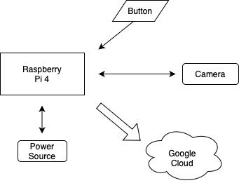

Our Raspberry Pi interfaces with a tiny camera module and handles all scripts on boot, ensuring full automation and a smooth user experience. The script handles button feedback control, photo relocation, and cloud transmission to Google Drive.
